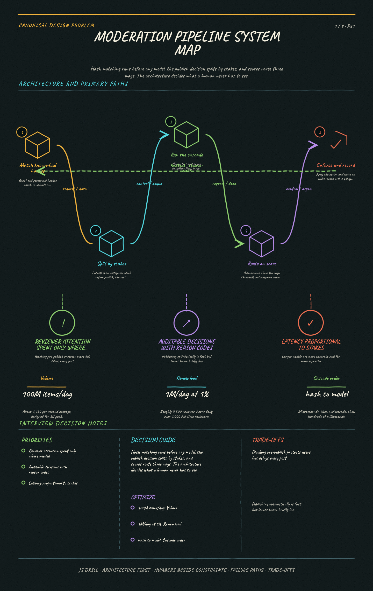

https://frosty110.github.io/js-drill/assets/system-design/infographics/design-problems/p31/architecture-overview.pngScreen user-generated content at platform scale using classifiers plus a human review queue. The signature challenge is that both error directions cause real harm, so the design is about routing uncertainty to humans rather than pushing a classifier toward perfect accuracy it will never reach.
All questions, model answers and diagrams for Design a Content Moderation Pipeline →